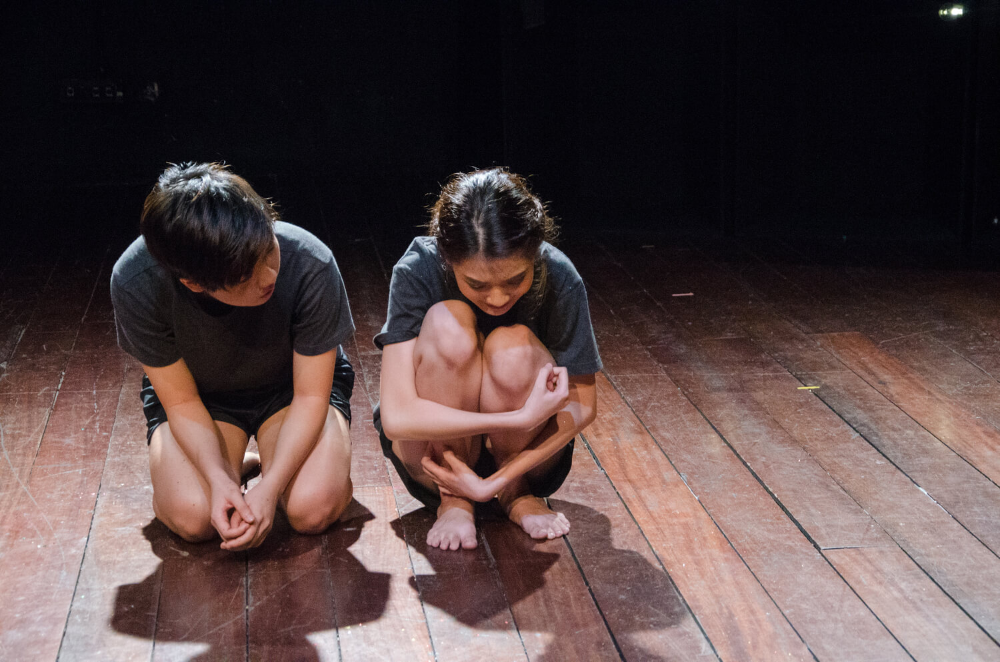
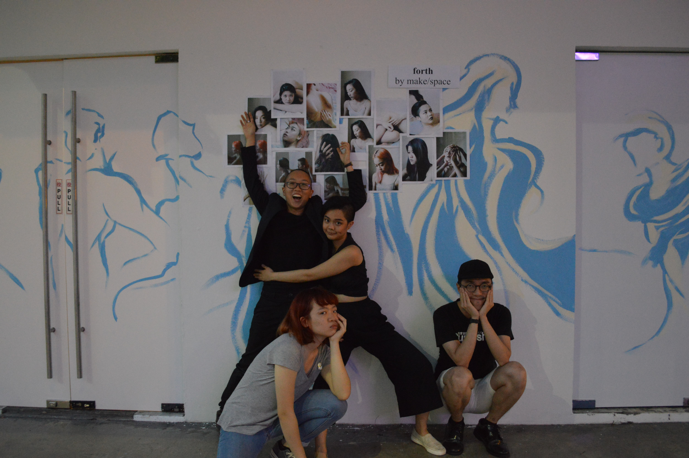

make/space (2015-2017)

make/space was a youth theatre company/ collective/ group that
existed for three years. We made original, experimental, ensemble-centric performances that challenged
mainstream narrativity and visual language with a turn to symbolic dissonance and the body. Our
productions were supported by the NAC Matchbox Fund, generous Indiegogo backers and our self-sacrificing
collaborators who worked pro bono.
I co-founded and co-led the group, working variously as director, playwright, producer, production
manager, and marketing manager.
Logo
Amy Ong
Photographs
Amy Ong, Ang Cheng Hui, Zhang He-jia
✶
performances
forth
25 Aug-3 Sep 2017
Le Danz (222 Queen Street)
Figs
30 Jun-2 Jul 2016
The Substation Theatre
Rewind/Reprise
19 Mar 2016
Rehearsal Studio, Centre 42
Flicker
17-18 Jul 2015
The Substation Theatre



✶
Collaborators, Co-Workers
Alethea Koh
Alexis Goh Weiying
Amy Ong
André Chong
Ang Cheng Hui
Ang Kia Yee
Anne Fong
ants chua
Averyn Thng
Celine Ng
Chantel Foo
Chantel Goh
Chelsea Tan
Chng Jieying
Clare Chong
Emmaus Tan
Esther Koh Siang
Giogi Phang
Gracia Ting
Jaisilan Sathiasilan
Jason Ng
Jubilee Tai
June Ong
Katrina Jacinto
Kavya Sundar
Ke Weiliang
Lam Li Shuen
Leong Xuan Li
Linette Chan
Louise Marie Lee
Marcia Lee Tjie Yi
Mike Chang
Nick Ng
Nigel Choo
Pek Jia Wen
Pratyay Jaidev
Rachel Kwan
Rachel Yen
Ranice Tay
Reis Low
Risa Ann Wong
Seah Wang Ling
Shane Soh
Syafiqah Nabilah
Tan Xing Zhi
Teoh Qi En
Zhang He-jia